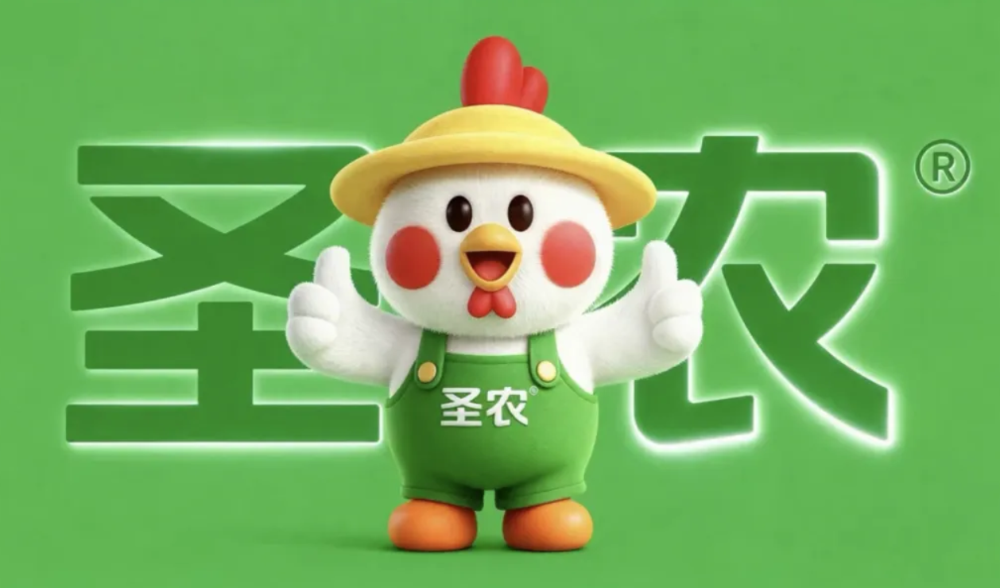

01 · 现场
先到终端找出真正影响销售的问题
团队进入卖场观察陈列、沟通和购买过程，并通过现场卖货验证判断。具体问题被逐项改善，而不是只从报告推演消费者。

02 · 改善
把有效动作固化为可复制方法
陈列、话术、物料和促销协同优化后，单点经验才能复制到更多终端。原文记录部分终端销售提升至改善前的3倍。

03 · 符号
用“圣小农”建立专属品牌角色
品牌角色把企业名称、产品与亲切形象连接起来，可进入包装、终端和活动，持续提供统一识别。

04 · 旺季
寄生春节文化，统一产品与节庆传播
“多吃圣农炸鸡，多添大吉大利”把产品消费与春节吉祥话连接起来。包装、终端和活动围绕同一主题集中出现。